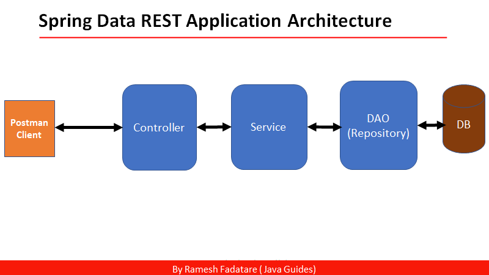

In this tutorial, we will learn how to use the Spring Data REST module to create REST endpoints.
Spring Data REST is part of the umbrella Spring Data project and makes it easy to build hypermedia-driven REST web services on top of Spring Data repositories.
Spring Data REST builds on top of Spring Data repositories, analyzes your application’s domain model, and exposes hypermedia-driven HTTP resources for aggregates contained in the model.
In a typical Spring-based application, we create three-layer architecture as below:
If we want to create a CRUD REST APIs for an entity then we need to create a controller class and need to manually write REST APIs ( create, update, delete, get, pagination, sorting etc).
If we want to create a CRUD REST APIs for another entity: For example, Department, Project, Company, User, etc. Then, we need to create a controller for all these entities and create REST APIs.
We are repeating the same code again….
Think about the solution : Spring can Create CRUD REST APIs for entity automatically for us
Spring Data REST module is the solution. Spring Data REST uses interfaces that extend JpaRepository and
provides CRUD REST APIs for entities for FREE - Helps to minimize the boiler-plate controller layer code.
Spring Boot provides a web tool called https://start.spring.io to bootstrap an application quickly. Just go to https://start.spring.io and generate a new spring boot project.
Use the below details in the Spring boot creation:
Project Name: spring-data-rest-tutorial
Project Type: Maven
Choose dependencies: REST Repositories, Spring Data JPA, H2 database, Lombok
Package name: net.javaguides.springdatarest
Here is the complete pom.xml for your reference:
<?xml version="1.0" encoding="UTF-8"?>
<project xmlns="http://maven.apache.org/POM/4.0.0" xmlns:xsi="http://www.w3.org/2001/XMLSchema-instance"
xsi:schemaLocation="http://maven.apache.org/POM/4.0.0 https://maven.apache.org/xsd/maven-4.0.0.xsd">
<modelVersion>4.0.0</modelVersion>
<parent>
<groupId>org.springframework.boot</groupId>
<artifactId>spring-boot-starter-parent</artifactId>
<version>3.0.4</version>
<relativePath/> <!-- lookup parent from repository -->
</parent>
<groupId>net.javaguides</groupId>
<artifactId>spring-data-rest-tutorial</artifactId>
<version>0.0.1-SNAPSHOT</version>
<name>spring-data-rest-tutorial</name>
<description>Demo project for Spring Boot and Spring Data REST</description>
<properties>
<java.version>17</java.version>
</properties>
<dependencies>
<dependency>
<groupId>org.springframework.boot</groupId>
<artifactId>spring-boot-starter-data-jpa</artifactId>
</dependency>
<dependency>
<groupId>org.springframework.boot</groupId>
<artifactId>spring-boot-starter-data-rest</artifactId>
</dependency>
<dependency>
<groupId>org.springframework.boot</groupId>
<artifactId>spring-boot-devtools</artifactId>
<scope>runtime</scope>
<optional>true</optional>
</dependency>
<dependency>
<groupId>com.h2database</groupId>
<artifactId>h2</artifactId>
<scope>runtime</scope>
</dependency>
<dependency>
<groupId>org.projectlombok</groupId>
<artifactId>lombok</artifactId>
<optional>true</optional>
</dependency>
<dependency>
<groupId>org.springframework.boot</groupId>
<artifactId>spring-boot-starter-test</artifactId>
<scope>test</scope>
</dependency>
</dependencies>
<build>
<plugins>
<plugin>
<groupId>org.springframework.boot</groupId>
<artifactId>spring-boot-maven-plugin</artifactId>
<configuration>
<excludes>
<exclude>
<groupId>org.projectlombok</groupId>
<artifactId>lombok</artifactId>
</exclude>
</excludes>
</configuration>
</plugin>
</plugins>
</build>
</project>
Let's create an entity package inside a base package
"net.javaguides.springdatarest". Within the entity
package, create a User class with the following content:
package net.javaguides.springdatarest.entity;
import lombok.AllArgsConstructor;
import lombok.Builder;
import lombok.Data;
import lombok.NoArgsConstructor;
import jakarta.persistence.*;
@NoArgsConstructor
@AllArgsConstructor
@Data
@Builder
@Entity
@Table(name = "users")
public class User {
@Id
@GeneratedValue(strategy = GenerationType.IDENTITY)
private long id;
@Column(
name = "first_name", nullable = false
)
private String firstName;
@Column(
name = "last_name"
)
private String lastName;
private String email;
}
Note that we are using Lombok annotation @Data to reduce the boilerplate
code (getters/setters).
The next thing we’re gonna do is create a repository to access a User’s data from the database.
The JpaRepository interface defines methods for all the CRUD operations on
the entity, and a default
implementation of the JpaRepository called SimpleJpaRepository.
Let's create a repository package inside a base package
"net.javaguides.springdatarest". Within the
repository package, create a UserReposity
interface with the following content:
package net.javaguides.springdatarest.repository;
import net.javaguides.springdatarest.entity.User;
import org.springframework.data.jpa.repository.JpaRepository;
public interface UserRepository extends JpaRepository {
}
That's it. Spring Data REST will create REST APIs based on the entity type. We do not need to create a controller layer implementation.
URL: http://localhost:8080/users
HTTP Method: GET
URL: http://localhost:8080/users/1
HTTP Method: GET
URL: http://localhost:8080/users
HTTP Method: POST
URL: http://localhost:8080/users/1
HTTP Method: PUT
URL: http://localhost:8080/users/1
HTTP Method: DELETE
/users to /members:
package net.javaguides.springdatarest.repository;
import net.javaguides.springdatarest.entity.User;
import org.springframework.data.jpa.repository.JpaRepository;
import org.springframework.data.rest.core.annotation.RepositoryRestResource;
import java.util.List;
@RepositoryRestResource(path = "members")
public interface UserRepository extends JpaRepository<User, Long> {
}
Let's create a query method in the below repository and test using the postman client:
package net.javaguides.springdatarest.repository;
import net.javaguides.springdatarest.entity.User;
import org.springframework.data.jpa.repository.JpaRepository;
import org.springframework.data.repository.query.Param;
import org.springframework.data.rest.core.annotation.RepositoryRestResource;
import java.util.List;
@RepositoryRestResource(path = "members")
public interface UserRepository extends JpaRepository<User, Long> {
List<User> findByFirstName(@Param("firstName") String firstName);
}